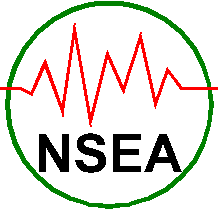

Randy Knowles, KAA8142, of Kenilworth, IL passed away on August 21st, 2026 after a long illness. Randy is well known as the father of GMRS, and was one of its greatest proponents. Without his efforts it is likely that the UHF GMRS would have been totally subsumed by the Business radio service. At the time of his death he held the oldest remaining GMRS callsign, KAA8142. He was a founder of the North Shore Emergency Association, a long-time GMRS public service group in the Chicago area as well as the owner of one of the earliest GMRS repeater systems, the “.675” system in the north suburbs.
Not just in the Chicago area but nationwide, Randy had influenced GMRS use with his advocacy and helpful guidance. Starting in the 1960’s he had adopted the 460 MHz UHF spectrum as a supplement for the 27 MHz CB spectrum.
Over the decades he made multiple pleadings to the FCC to preserve GMRS against encroachment by business interests in favor of family and public service operations. As a practicing attorney he was able to leverage his profession with his passion for GMRS.
Many CARMA members will remember the old Metro Radio Group; for years it was used by CARMA members to coordinate listening and activities. MRG was formed after a presentation on GMRS by Randy and his guidance was essential in properly forming the group.
Randy is survived by his wife Debbie Katz Knowles. He will be missed by all that knew him. All GMRS operators owe him a debt of gratitude, for GMRS would not be here if not for Randy.
Randy served as Communications Chairman of the Evanston 4th of July Association for more than 50 years. Read his trustee biography at evanston4th.org.
NSEA is a Not-for-Profit IRS recognized tax exempt Public Charity
© 2015-2026
North Shore Emergency Association